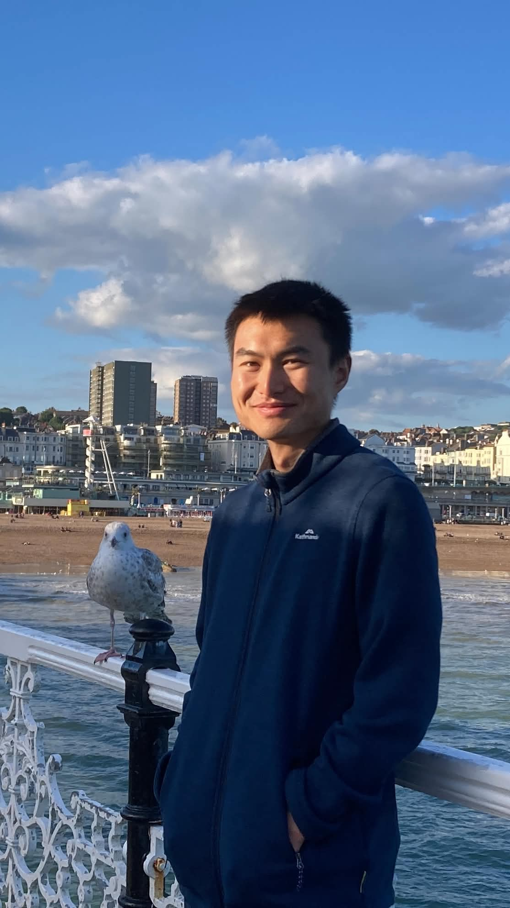

I am a PhD student at the Australian National University under the supervision of Po-Lam Yung. In 2024 I visited Jan Kristensen during Hilary and Trinity terms while on exchange to the University of Oxford.
My research lies at the intersection of harmonic analysis and partial differential equations (PDE), and my focus is on endpoint $L^1$ Sobolev inequalities. These inequalities provide the basic tools for studying existence, uniqueness, and regularity questions coming from PDE. Many classical estimates fail at the $L^1$ endpoint, but they can be recovered by exploiting additional cancellation in the underlying functions or differential operators. My work investigates these mechanisms and has led to new power weighted Stein-Weiss and Hardy-Sobolev inequalities.
The central theme motivating my research is to understand the failure mechanisms for these endpoint inequalities. The common obstructions are that $L^1$ sequences may concentrate towards Dirac delta/point distributions, or estimates may fail because of insufficient decay and integrability at the origin or infinity. These phenomena can require different forms of cancellation to overcome, and understanding how they occur leads to improved inequalities. I aim to develop a better understanding of these mechanisms, and hence investigate how one can improve and sharpen these inequalities.
Keywords that interest me: Harmonic Analysis Partial Differential Equations and the Calculus of Variations.
My recent work includes:
My recent talks: